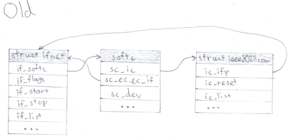
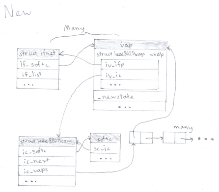

Update Atheros Wi-Fi driver(s) for new Wi-Fi stack
Jeandre Kruger
Fixes – ath(4)
I couldn't reproduce the crash I thought was caused by wpa_supplicant
mentioned in the last post. However, it did tend to crash when
streaming video for more than a few minutes. M_CLEARCTX
seemed to fix this, and it hasn't crashed since (ignoring mdnsd).
Reenabling ath_chan_change fixed the "bad rate" messages
reported by athrate-sample. But reenabling ath_watchdog
results in occasional "device timeouts."
Wi-Fi working – ath(4)
After making the code regarding getting channels behave (mostly)
correctly, adding IEEE80211_C_WPA to
ic_caps, and restoring/adjusting
athrate-sample.c, wpa_supplicant connects to my network
and Wi-Fi mostly works(!) ignoring some kernel messages about "bad
rates." Doubtless some things still need to be corrected (and other
things need to be cleaned up, fixed, and made less hacky). mdnsd
(Bonjour) causes an assertion to fail during some ioctl.
wpa_supplicant also sometimes seems to crash the system based on the
exact sequence of commands used to set Wi-Fi up, so I'll also need to
perform some debugging.
Creating a VAP & scanning
The code is now on
GitHub.
Re-enabling code, adjusting as necessary and incorporating some bits
from FreeBSD brought the driver to the point (around last Friday [per
my report on tech-net]) where one can create a VAP and scan for
networks. Since then adding ath_recv_mgmt back seems to
have somehow made scanning faster (…or maybe it didn't really).
I have not yet been able to join a network with wpa_supplicant, and
there's still a lot that I might need to try to better understand.
Successfully initialized wpa_supplicant
ioctl[SIOCS80211, op=26, val=3, arg_len=0]: Operation not supported
wpa_driver_bsd_scan: failed to set wpa: Operation not supported
wlan0: CTRL-EVENT-SCAN-FAILED ret=-1 retry=1
<etc.>
Getting started trying stuff out
Trying to build athn(4) on the wifi topic results in a lot of errors
in multiple arnXXXX.c files. Trying to build ath(4) on the other hand
seemed to result in fewer errors. So it might be better to convert
ath first.
I substituted ic_macaddr for ic_myaddr;
made newstate take a VAP; replaced
ic->ic_ifp->if_softc with ic->ic_softc;
changed some other references; haphazardly disabled swathes of
(important) code (a lot of important functions); and added a
few random stopgaps. Eventually it compiled without error;
ieee80211_ifattach panicked but taking the contents of
rtwn_get_radiocaps served as a stopgap. Thus it was
able to boot, and ath0 was shown by sysctl.
Creating a VAP with ifconfig is (unsurprisingly) still far away (it
reported "STA mode not supported").
Basic differences in new drivers
As noted by
Martin's guide,
the main difference in new style drivers is the VAP concept. To that
end FreeBSD ath(4) defines struct ath_vap, deriving from
struct ieee80211vap. So whereas before it would look
something like this:

Now for any driver, the representation will look more or less like
this:

By comparing with FreeBSD ath(4) & the new rtwn driver:
Some new functions exist e.g. ath_vap_create,
ath_vap_delete, ath_parent.
Methods previously existing on the struct ifnet are
gone, e.g. if_start (replaced by
ic_transmit) if_watchdog,
if_ioctl and if_init.
Some methods previously existing on struct ieee80211com
are shifted to the VAP e.g. iv_recv_mgmt,
iv_newstate.
sc_ec is gone (or rather never existed in FreeBSD).
This only seems to affect the handling of multicast addresses.
Basic differences (ath vs athn)
ath(4) and athn(4) support somewhat different sets of hardware. The
most obvious difference in implementation is that ath(4) uses the
Atheros HAL. This was initially a blob but
open-sourced in 2009.
According to the
FreeBSD wiki,
The Atheros HAL is an abstraction layer which attempts to hide much of the card specific configuration from the rest of the atheros wireless driver.
The HAL takes care of the MAC, baseband and radio. It exports a set of routines which allow the atheros wireless driver to do certain tasks (set channel, configure TX queue, queue TX packet, queue RX buffer, setup interrupts, do calibration, set/get TX power, configure beacon parameters, enter power saving/sleep mode, etc.)
It doesn't seem that it'll require any changes (except ah_osdep.c).
So, for example, athn.c has routines that directly change particular
registers (using AR_WRITE i.e. sc_ops.write
which might resolve to athn_pci_write), the lowest-level
routines being implemented in if_athn_pci.c & if_athn_cardbus.c,
whereas ath.c uses the higher-level routines already provided by the HAL.
ath_softc and athn_softc are the most
important structs in both, which, presumably, will have a few mutexes
on them when finished (as FreeBSD). ath(4) seems to be the more
complicated of the two drivers.
This far I have ensured that the wifi branch builds and runs on the
target netbook. All the unconverted drivers need to be disabled.
Ethernet works. Presently it identifies as NetBSD 9.99.100.
To examine:
dev/pci/if_athn_pci.c and dev/pci/if_ath_pci.c and (perhaps
especially) dev/ic/athn.c and dev/ic/ath.c
other converted drivers e.g. rtwn(4)
FreeBSD
ath(4)
– converted and seemingly a lot more code now
One of the most obvious differences in the converted drivers is
the locking (mutex_init, mutex_enter,
mutex_exit).